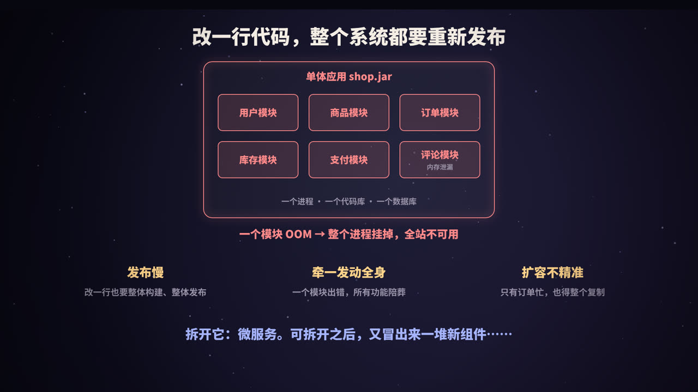
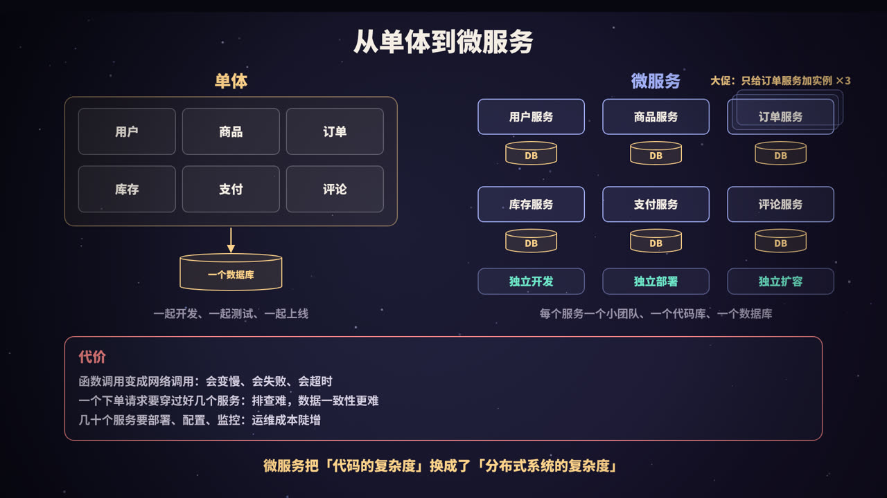
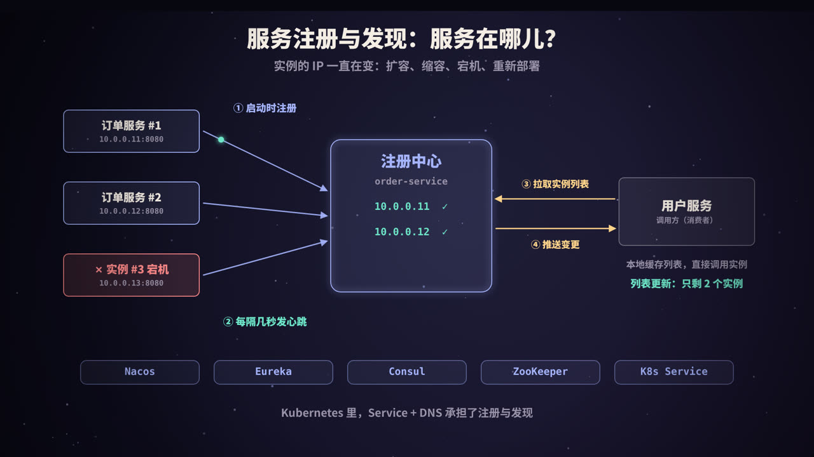
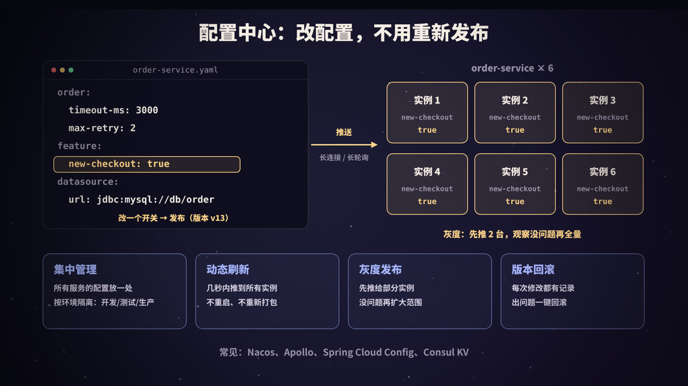
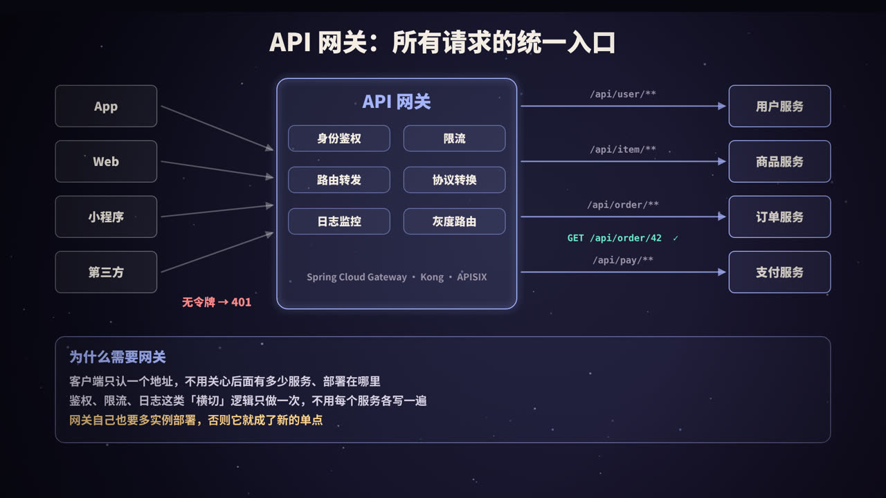
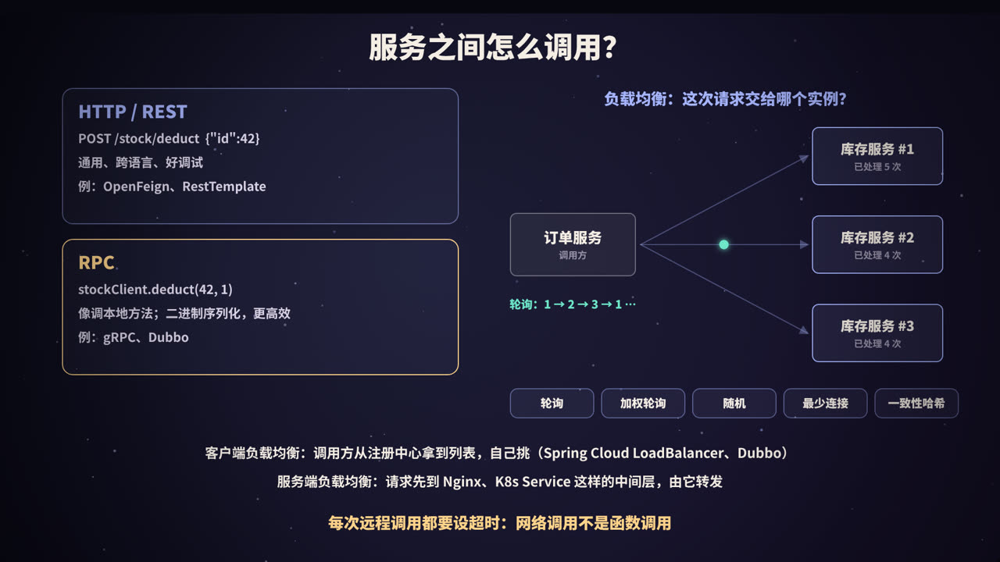
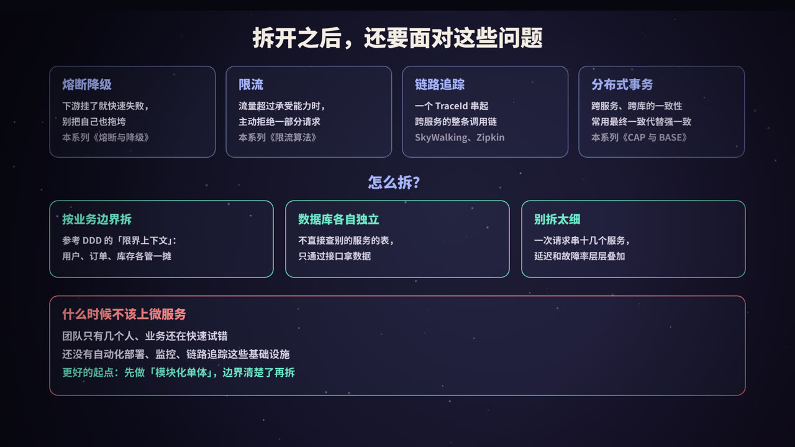

单体应用：一开始很好，后来很痛
几乎所有系统都是从单体应用（Monolith）起步的：用户、商品、订单、库存、支付、评论……所有功能写在一个代码库里，打成一个包（比如 shop.jar），跑在一个进程里，连同一个数据库。
单体在早期其实非常好用：
- 开发简单：模块之间是函数调用，IDE 里一跳就到；
- 调试简单：一个进程，打个断点就能看完整条链路；
- 部署简单：一个包、一条命令；
- 事务简单：一个数据库，
@Transactional一加，要么都成功要么都失败。
问题出在系统和团队变大以后：
| 痛点 | 具体表现 |
|---|---|
| 发布慢、风险大 | 改一行评论模块的代码，也要整个应用重新构建、测试、发布；一次上线夹带几十个人的改动，出问题很难回滚 |
| 牵一发而动全身 | 评论模块内存泄漏，整个进程 OOM，下单、支付一起不可用 |
| 扩容不精准 | 大促时只有订单和库存压力大，却只能把整个应用复制多份，连没人用的模块也一起占资源 |
| 协作冲突 | 几十上百人改同一个代码库，合并冲突、互相等待、谁也不敢动公共代码 |
| 技术栈锁死 | 想给推荐模块换个语言或框架，几乎不可能 |
于是人们开始把它拆开。
拆成微服务：得到什么，付出什么

微服务（Microservices）是一种架构风格：把一个大应用按业务能力拆成一组小服务，每个服务：
- 围绕一块业务（用户、订单、库存……），由一个小团队负责；
- 有自己的代码库、自己的数据库；
- 作为独立的进程运行，通过网络接口（HTTP、RPC、消息）和其他服务通信；
- 可以独立开发、独立部署、独立扩容。
| 单体 | 微服务 | |
|---|---|---|
| 部署单位 | 整个应用 | 单个服务 |
| 模块间通信 | 进程内函数调用 | 网络调用（HTTP / RPC / 消息） |
| 数据库 | 一个共享数据库 | 每个服务各自的数据库 |
| 扩容 | 整体复制 | 哪个服务忙就扩哪个 |
| 故障影响 | 一个模块出错可能拖垮整个进程 | 理论上可以隔离在单个服务内（需要熔断、隔离等手段配合） |
| 事务 | 本地事务，简单 | 跨服务一致性，复杂 |
| 排查问题 | 一个进程的日志和堆栈 | 跨多个服务的日志、链路追踪 |
| 运维 | 一个应用 | 几十上百个服务的部署、配置、监控 |
代价：分布式系统的复杂度
拆分并没有让复杂度消失，而是换了个地方：
- 函数调用变成了网络调用。函数调用几乎不会失败、耗时纳秒级；网络调用会超时、会丢包、会因为对方宕机而失败，延迟是毫秒级。本地调一次的代码，现在要考虑超时、重试、幂等；
- 一个请求穿过多个服务。用户下单要经过网关 → 订单 → 库存 → 支付 → 优惠券……任何一个环节变慢或出错，都会影响整体，排查时要把多个服务的日志拼起来；
- 数据一致性变难。订单库和库存库是两个数据库，没法用一个本地事务保证「下单成功且扣减库存成功」（见本系列《CAP 与 BASE》）；
- 运维成本陡增。服务多了，部署、配置、监控、扩缩容都需要自动化工具支撑，这也是容器和 Kubernetes 流行的原因之一（见本系列《Docker》）。
一句话：微服务把「代码的复杂度」换成了「分布式系统的复杂度」。下面登场的每一个组件，都是为了驯服这份新的复杂度。
拆开之后，第一个冒出来的问题是：订单服务要调用库存服务，库存服务在哪儿？
服务注册与发现：服务在哪儿？

为什么不能把 IP 写死
单体里调用库存模块是 stockService.deduct()，不需要知道地址。拆开以后，库存服务可能有 3 个实例：10.0.0.11:8080、10.0.0.12:8080、10.0.0.13:8080。如果把这些地址写在订单服务的配置文件里：
- 大促扩容加了 2 台，订单服务不知道；
- 某台机器宕机了，订单服务还在往上面发请求；
- 容器每次重新部署，IP 都可能变化。
需要一个「通讯录」，实时记录每个服务当前有哪些可用实例，这就是注册中心。
完整流程
| 步骤 | 谁做 | 做什么 |
|---|---|---|
| ① 注册 | 服务提供者 | 启动时把自己的服务名、IP、端口、元数据（版本、机房、权重等）登记到注册中心 |
| ② 心跳 | 服务提供者 | 每隔几秒向注册中心报告「我还活着」 |
| ③ 剔除 | 注册中心 | 一段时间收不到某个实例的心跳，就认为它挂了，从列表中删除 |
| ④ 拉取 / 订阅 | 服务调用者 | 从注册中心拿到某个服务的实例列表，缓存在本地；定时拉取，或订阅变更推送 |
| ⑤ 调用 | 服务调用者 | 从本地列表中按负载均衡策略选一个实例，直接发起调用 |
| ⑥ 注销 | 服务提供者 | 正常停机时主动从注册中心下线，比等心跳超时快得多 |
注意第 ⑤ 步：调用请求不经过注册中心。注册中心只是通讯录，就算它短暂不可用，调用方靠本地缓存的列表仍然能继续工作。
心跳的两种方式
- 客户端上报：实例主动定期发心跳，注册中心看「多久没收到」。Eureka 默认每 30 秒续约一次，90 秒没续约则过期；Nacos 1.x 的临时实例默认每 5 秒发一次心跳，15 秒没收到标记为不健康，30 秒没收到则删除（Nacos 2.x 改为通过 gRPC 长连接感知实例存活）；
- 服务端探测：注册中心（或 agent）主动去检查实例，比如 HTTP 健康检查接口、TCP 端口探测。Consul 的 health check、Kubernetes 的 readiness 探针都属于这一类。
心跳超时的取值是一种权衡：设短了，网络抖动一下就把健康实例踢掉；设长了，实例真挂了之后要过好一阵调用方才知道。在这段「列表还没更新」的窗口里，调用方仍可能把请求发给已经宕机的实例，所以调用方自己也要有失败重试、快速失败的能力，不能完全依赖注册中心。
客户端发现 vs 服务端发现
- 客户端发现：调用方集成注册中心的 SDK，自己拉列表、自己做负载均衡。Spring Cloud + Nacos / Eureka、Dubbo 都是这种模式。少一跳网络，策略灵活；代价是每种语言都要有对应的客户端库；
- 服务端发现：调用方只访问一个固定地址（负载均衡器或 Kubernetes Service），由中间层查询实例并转发。调用方完全不用关心实例列表，跟语言无关；代价是多了一个转发环节。
常见的注册中心
| 一致性倾向 | 健康检查 | 特点 | |
|---|---|---|---|
| Nacos | 临时实例 AP（Distro 协议），持久实例 CP（Raft） | 客户端心跳 / 长连接；持久实例由服务端探测 | 注册中心 + 配置中心二合一，国内 Spring Cloud Alibaba 生态常用 |
| Eureka | AP | 客户端续约 | Spring Cloud Netflix 体系；有「自我保护」机制：短时间内大量实例续约失败时，宁可保留可能过期的实例也不批量剔除 |
| Consul | CP（Raft） | agent 执行的多种健康检查 | 自带 KV 存储、DNS 接口、多数据中心支持 |
| ZooKeeper | CP（ZAB） | 会话 + 临时节点 | 实例注册为临时节点，会话断开自动删除；调用方 watch 节点变化。Dubbo 早期常用 |
| etcd | CP（Raft） | 租约（lease） | Kubernetes 自己的存储 |
| Kubernetes Service | — | readiness 探针 | Pod 就绪后自动进入 Service 的后端列表；通过 ClusterIP + 集群 DNS 访问 |
注册中心该选 AP 还是 CP？ 注册中心的数据「稍微旧一点」通常问题不大（调用方有重试），但如果因为网络分区导致注册中心整体不可用、新实例无法注册、调用方拿不到列表，影响就大得多。所以业界普遍认为服务发现场景更适合 AP。CAP 的详细讨论见本系列《CAP 与 BASE》。
在 Kubernetes 里
如果服务都跑在 Kubernetes 上，很多时候不需要额外的注册中心：
- 每个 Deployment 前面放一个 Service，它有一个稳定的虚拟 IP（ClusterIP）和 DNS 名字，比如
stock-service.default.svc.cluster.local； - Pod 通过 readiness 探针后，会被加入 Service 的后端列表（EndpointSlice）；Pod 挂掉或未就绪时自动移除；
- 调用方直接访问
http://stock-service:8080，由 kube-proxy（iptables / IPVS 规则）把请求转发到某个 Pod。
这就是典型的「服务端发现」。代价是负载均衡策略比较简单，想做按权重、按版本的精细路由，往往要上服务网格（如 Istio）。
动手：用 Python 写一个迷你注册中心
下面这段程序只用 Python 标准库，模拟注册中心的核心逻辑：
Registry：保存实例列表，后台线程定期剔除心跳超时的实例；Provider：真的起一个 HTTP 服务（随机端口），启动时注册，然后每 0.2 秒发心跳；可以模拟「突然宕机」（不注销、不再心跳）和「优雅下线」（主动注销）；Client：启动时拉取列表缓存在本地，后台定期刷新，调用时轮询选实例，连接失败就换下一个。
import itertools, threading, time, urllib.request
from http.server import ThreadingHTTPServer, BaseHTTPRequestHandler
HEARTBEAT = 0.2 # 提供者每 0.2 秒发一次心跳
TTL = 0.6 # 超过 0.6 秒没收到心跳，就认为实例挂了
REFRESH = 0.5 # 调用方每 0.5 秒从注册中心拉一次列表
T0 = time.monotonic()
def log(*a):
print(f"[{time.monotonic() - T0:4.1f}s]", *a, flush=True)
# ---------------- 注册中心 ----------------
class Registry:
def __init__(self):
self._lock = threading.Lock()
self._data = {} # 服务名 -> {地址: (实例名, 最后心跳时间)}
threading.Thread(target=self._evict_loop, daemon=True).start()
def register(self, service, addr, name):
with self._lock:
self._data.setdefault(service, {})[addr] = (name, time.monotonic())
log(f"注册中心：{name} 注册上线")
def heartbeat(self, service, addr):
with self._lock:
inst = self._data.get(service, {})
if addr in inst:
inst[addr] = (inst[addr][0], time.monotonic())
def deregister(self, service, addr):
with self._lock:
name, _ = self._data[service].pop(addr)
log(f"注册中心：{name} 主动下线")
def instances(self, service):
with self._lock:
return sorted(((addr, name) for addr, (name, _) in self._data.get(service, {}).items()), key=lambda x: x[1])
def _evict_loop(self): # 后台线程：定期剔除心跳超时的实例
while True:
time.sleep(TTL / 3)
now = time.monotonic()
with self._lock:
for service, inst in self._data.items():
for addr, (name, beat) in list(inst.items()):
if now - beat > TTL:
del inst[addr]
log(f"注册中心：{name} 心跳超时 {now - beat:.1f}s，剔除")
# ---------------- 服务提供者 ----------------
class Provider:
def __init__(self, registry, service, name):
class Handler(BaseHTTPRequestHandler):
def do_GET(self):
body = f"{name} 扣减库存成功".encode()
self.send_response(200); self.send_header("Content-Length", str(len(body))); self.end_headers()
self.wfile.write(body)
def log_message(self, *args):
pass
self.registry, self.service, self.name = registry, service, name
self.httpd = ThreadingHTTPServer(("127.0.0.1", 0), Handler) # 端口 0：随机分配
self.addr = "127.0.0.1:%d" % self.httpd.server_address[1]
self._stop = threading.Event()
threading.Thread(target=self.httpd.serve_forever, daemon=True).start()
registry.register(service, self.addr, name) # ① 启动时注册
threading.Thread(target=self._beat, daemon=True).start() # ② 定时心跳
def _beat(self):
while not self._stop.wait(HEARTBEAT):
self.registry.heartbeat(self.service, self.addr)
def crash(self): # 进程被 kill -9：既不注销，也不再发心跳
self._stop.set(); self.httpd.shutdown(); self.httpd.server_close()
log(f"!! {self.name} 突然宕机")
def shutdown(self): # 优雅下线：先注销，再关服务
self.registry.deregister(self.service, self.addr)
self._stop.set(); self.httpd.shutdown(); self.httpd.server_close()
# ---------------- 服务调用方 ----------------
class Client:
def __init__(self, registry, service):
self.registry, self.service = registry, service
self.cache = registry.instances(service) # ③ 拉取列表，缓存在本地
self.rr = itertools.count()
log("调用方：拿到实例列表", [n for _, n in self.cache])
threading.Thread(target=self._refresh, daemon=True).start()
def _refresh(self):
while True:
time.sleep(REFRESH)
new = self.registry.instances(self.service)
if new != self.cache:
self.cache = new
log("调用方：列表更新为", [n for _, n in new])
def call(self, path):
cache = self.cache
for _ in range(len(cache)): # 最多把每个实例都试一遍
addr, name = cache[next(self.rr) % len(cache)] # 轮询
try:
with urllib.request.urlopen(f"http://{addr}{path}", timeout=0.5) as resp:
return resp.read().decode()
except OSError:
log(f"调用方：{name} 连接失败（本地列表还没更新），换下一个")
raise RuntimeError("没有可用的实例")
if __name__ == "__main__":
reg = Registry()
ps = [Provider(reg, "stock-service", f"stock-{i}") for i in (1, 2, 3)]
client = Client(reg, "stock-service")
log("—— 轮询调用 6 次 ——")
for _ in range(6):
log(" ", client.call("/deduct?id=42"))
ps[2].crash()
log("—— 宕机后立刻调用 3 次 ——")
for _ in range(3):
log(" ", client.call("/deduct?id=42"))
time.sleep(1.2) # 等心跳超时被剔除、调用方刷新列表
log("—— 扩容：再启动一个实例 ——")
ps.append(Provider(reg, "stock-service", "stock-4"))
time.sleep(0.6)
for _ in range(3):
log(" ", client.call("/deduct?id=42"))
log("—— 优雅下线 stock-1 ——")
ps[0].shutdown()
time.sleep(0.6)
for _ in range(2):
log(" ", client.call("/deduct?id=42"))
运行 python3 registry_demo.py 的真实输出（时间戳每次会有零点几秒的差异）：
[ 0.0s] 注册中心：stock-1 注册上线
[ 0.0s] 注册中心：stock-2 注册上线
[ 0.0s] 注册中心：stock-3 注册上线
[ 0.0s] 调用方：拿到实例列表 ['stock-1', 'stock-2', 'stock-3']
[ 0.0s] —— 轮询调用 6 次 ——
[ 0.0s] stock-1 扣减库存成功
[ 0.0s] stock-2 扣减库存成功
[ 0.0s] stock-3 扣减库存成功
[ 0.1s] stock-1 扣减库存成功
[ 0.1s] stock-2 扣减库存成功
[ 0.1s] stock-3 扣减库存成功
[ 0.6s] !! stock-3 突然宕机
[ 0.6s] —— 宕机后立刻调用 3 次 ——
[ 0.6s] stock-1 扣减库存成功
[ 0.6s] stock-2 扣减库存成功
[ 0.6s] 调用方：stock-3 连接失败（本地列表还没更新），换下一个
[ 0.6s] stock-1 扣减库存成功
[ 0.8s] 注册中心：stock-3 心跳超时 0.8s，剔除
[ 1.0s] 调用方：列表更新为 ['stock-1', 'stock-2']
[ 1.8s] —— 扩容：再启动一个实例 ——
[ 1.8s] 注册中心：stock-4 注册上线
[ 2.0s] 调用方：列表更新为 ['stock-1', 'stock-2', 'stock-4']
[ 2.4s] stock-2 扣减库存成功
[ 2.4s] stock-4 扣减库存成功
[ 2.4s] stock-1 扣减库存成功
[ 2.4s] —— 优雅下线 stock-1 ——
[ 2.4s] 注册中心：stock-1 主动下线
[ 2.5s] 调用方：列表更新为 ['stock-2', 'stock-4']
[ 3.5s] stock-4 扣减库存成功
[ 3.5s] stock-2 扣减库存成功
从输出里能读出几件真实系统里同样会发生的事：
- 宕机到被剔除之间有一个窗口：stock-3 在 0.6s 宕机，0.8s 才被注册中心剔除，1.0s 调用方才拿到新列表。这段时间里请求仍会打到 stock-3，靠调用方的「失败换下一个」兜住。真实系统的心跳间隔是秒级，这个窗口可能是十几秒到一分多钟；
- 扩容是自动生效的：stock-4 启动注册后，调用方下一次刷新就能看到它，订单服务的配置一行都不用改；
- 优雅下线比宕机好得多：stock-1 主动注销后立即从列表消失，不会有请求失败。所以生产环境发布时要先注销、等一会儿（让调用方刷新列表、处理完在途请求），再停进程。Kubernetes 里常用
preStop钩子加一个短暂的 sleep 来做这件事。
这只是教学模型：真实的注册中心还要处理集群部署与数据同步、推送而不是只靠拉取、命名空间与分组、权重与元数据、大规模实例下的性能等问题。
配置中心：改配置，不用重新发布

配置散落各处的问题
单体时代，配置写在 application.yml 里，跟着代码一起打包。拆成几十个服务、每个服务十几个实例后：
- 改一个超时时间，要改配置文件、重新打包、重新发布所有实例；
- 开发、测试、预发、生产四套环境，配置文件复制来复制去，很容易改漏；
- 想临时关掉一个有问题的新功能，只能紧急发版；
- 数据库密码明文写在代码仓库里。
配置中心把配置从代码里拿出来，集中管理，并在运行时推送给服务。
核心能力
| 能力 | 说明 |
|---|---|
| 集中管理 | 所有服务的配置在一个地方查看和修改；按「环境 / 命名空间 / 分组 / 服务名」组织 |
| 动态刷新 | 修改后几秒内推送到所有实例，应用在不重启的情况下读到新值 |
| 灰度发布 | 新配置先推给部分实例（比如指定 IP 或按比例），观察没问题再全量 |
| 版本与回滚 | 每次修改都有历史版本、修改人、修改时间，出问题一键回滚 |
| 权限与审计 | 谁能改生产配置、改了什么，都有记录 |
| 本地容灾 | 客户端把配置缓存在本地文件，配置中心挂了，服务仍能用上次的配置启动 |
配置是怎么「推」下去的
大多数配置中心并不是真的由服务端主动连接每个实例，而是让客户端长轮询或维持长连接：
- 客户端发起请求：「我当前的配置版本是 v12，有变化告诉我」；
- 服务端如果没有变化，就先不返回，挂起这个请求一段时间（比如几十秒）；
- 期间配置被修改，服务端立刻返回「有变化」；客户端再去拉取新配置；
- 挂起超时也没变化，就返回空结果，客户端马上再发起下一次长轮询。
这样既有接近实时的推送效果，又不需要服务端维护到每个实例的反向连接。Apollo 使用 HTTP 长轮询；Nacos 1.x 用长轮询，2.x 改成了 gRPC 长连接。
动态刷新的「参考写法」
以 Spring Cloud Alibaba + Nacos 为例（需要运行中的 Nacos 服务，本文没有在本机运行，属于参考写法，具体属性以所用版本的文档为准）：
# application.yml（参考写法）
spring:
application:
name: order-service
config:
import: nacos:order-service.yaml?refreshEnabled=true
cloud:
nacos:
server-addr: nacos.internal:8848
config:
namespace: prod
// 参考写法：@RefreshScope 让 Bean 在配置变更后重新创建，拿到新值
@RefreshScope
@RestController
public class CheckoutController {
@Value("${feature.new-checkout:false}")
private boolean newCheckout;
@PostMapping("/checkout")
public String checkout() {
return newCheckout ? newFlow() : oldFlow();
}
}
也可以用 @ConfigurationProperties 绑定一组配置，Spring Cloud 在收到刷新事件后会重新绑定。
用好配置中心的注意事项
- 配置也是代码：改生产配置和发版一样危险，同样需要审批、灰度、回滚预案。很多线上事故就是一次「只改了个配置」；
- 区分静态与动态：数据库连接池大小、线程池核心数这类配置，改了值未必能在运行时生效，要确认组件是否支持热更新；
- 敏感信息加密：密码、密钥不要明文存放，使用配置中心的加密功能或专门的密钥管理服务；
- 功能开关（Feature Flag）是配置中心最常见的用途之一：新功能代码先上线但默认关闭，再通过配置逐步打开，出问题立刻关掉。
常见的配置中心：Nacos、Apollo、Spring Cloud Config（基于 Git 存储）、Consul KV、etcd。Kubernetes 里的 ConfigMap / Secret 也承担了一部分配置管理的工作，但灰度、审计等能力较弱。
API 网关：所有请求的统一入口

没有网关会怎样
拆成几十个服务以后，如果让 App、Web、小程序直接调用各个服务：
- 客户端要知道每个服务的地址，服务一调整，客户端就得发版；
- 每个服务都要自己实现登录校验、限流、跨域、日志……大量重复代码，还容易有遗漏；
- 内部服务直接暴露在公网上，安全风险大。
API 网关是挡在所有服务前面的一层：外部请求只访问网关，由网关完成通用处理，再转发给对应的服务。
网关做什么
| 功能 | 说明 |
|---|---|
| 路由转发 | 按路径、域名、请求头等规则，把 /api/order/** 转给订单服务、/api/user/** 转给用户服务 |
| 身份鉴权 | 统一校验 Token / Cookie，没登录直接返回 401，后端服务只需信任网关传下来的用户身份 |
| 限流熔断 | 按接口、用户、IP 限制请求速率，保护后端（见本系列《限流算法》） |
| 协议转换 | 对外提供 HTTP/JSON，对内转成 gRPC 或 Dubbo 调用 |
| 灰度路由 | 按用户、比例、请求头把一部分流量导到新版本服务 |
| 日志监控 | 统一记录访问日志、耗时、错误率，生成 TraceId 传给下游 |
| 跨域、HTTPS 卸载、请求改写 | 这些「横切」逻辑在网关做一次即可 |
网关和 Nginx 是什么关系
两者都能做反向代理和负载均衡，区别在于侧重点：
- Nginx：高性能的通用反向代理，配置以静态文件为主，适合做流量入口、TLS 卸载、静态资源；
- 业务网关（Spring Cloud Gateway、Kong、APISIX 等）：和注册中心集成（路由到
lb://order-service这样的服务名，而不是写死 IP），支持动态路由、插件化的鉴权和限流，更贴近业务。Kong 和 APISIX 本身就基于 Nginx / OpenResty 构建。
常见的部署是两层：最外层 Nginx 或云厂商的负载均衡器（负责 TLS、抗流量），后面是业务网关（负责鉴权、路由），再后面是各个服务。
Spring Cloud Gateway 路由的参考写法
# 参考写法：需要注册中心和后端服务，本文没有在本机运行
spring:
cloud:
gateway:
routes:
- id: order
uri: lb://order-service # lb:// 表示从注册中心找实例，并做负载均衡
predicates:
- Path=/api/order/**
filters:
- StripPrefix=1 # 转发时去掉 /api 前缀
- id: user
uri: lb://user-service
predicates:
- Path=/api/user/**
filters:
- StripPrefix=1
Spring Cloud Gateway 较新的版本对配置前缀做了调整，以所用版本的文档为准。
网关的注意事项
- 网关不能成为单点：网关自身必须多实例部署，前面再放负载均衡器；
- 网关里不要写业务逻辑：它应该保持「薄」，只做通用的横切处理。业务逻辑塞进网关，所有团队都得改它，又回到了单体的老路；
- 注意性能：所有流量都经过网关，网关多一毫秒，所有接口都多一毫秒。主流网关都采用异步非阻塞模型；
- BFF（Backend for Frontend）：不同客户端（App、Web）需要的数据形态差别很大时，可以在网关后面为每类客户端做一个聚合层，把多个服务的数据组装好再返回。
服务之间怎么调用

HTTP / REST 与 RPC
| HTTP / REST | RPC（gRPC、Dubbo 等） | |
|---|---|---|
| 调用形式 | POST /stock/deduct + JSON |
stockClient.deduct(42, 1)，像调用本地方法 |
| 序列化 | 文本（JSON），可读性好 | 通常是二进制（Protobuf、Hessian 等），体积小、解析快 |
| 接口约定 | 文档 / OpenAPI，约束较松 | IDL（如 .proto 文件）或 Java 接口，强类型，自动生成代码 |
| 跨语言 | 天然通用 | gRPC 跨语言好；Dubbo 以 Java 为主 |
| 调试 | curl、浏览器就能调 | 需要专门的工具 |
| 典型场景 | 对外开放接口、异构系统、团队间约定 | 内部高频调用、对性能要求高 |
gRPC 基于 HTTP/2，支持多路复用和双向流。对大多数业务来说，两者的性能差异不是瓶颈，选择更多取决于团队技术栈和生态。
Spring Cloud 里常用 OpenFeign 把 HTTP 调用写成接口的形式（参考写法）：
// 参考写法：声明一个接口，Feign 在运行时生成实现；"stock-service" 通过注册中心解析
@FeignClient(name = "stock-service")
public interface StockClient {
@PostMapping("/stock/deduct")
DeductResult deduct(@RequestParam("skuId") long skuId, @RequestParam("count") int count);
}
另一种通信方式是异步消息：订单服务发出「订单已创建」事件，库存、积分、通知服务各自订阅处理，彼此不直接依赖（见本系列《消息队列》）。适合不需要立即拿到结果的场景。
负载均衡：这次请求交给哪个实例
调用方从注册中心拿到 3 个库存服务实例，每次调用选哪一个？
| 策略 | 做法 | 适合 |
|---|---|---|
| 轮询 | 1 → 2 → 3 → 1 → … | 实例配置相同，最常用的默认策略 |
| 加权轮询 | 按权重分配，权重 2 的实例拿到 2 倍请求 | 机器配置不同；新实例预热时先给小权重 |
| 随机 / 加权随机 | 随机选，请求量大时接近均匀 | 实现简单，无需共享状态 |
| 最少连接 / 最短响应时间 | 选当前正在处理请求最少（或最快）的实例 | 请求耗时差异大 |
| 一致性哈希 | 按用户 ID 等参数哈希，同一个参数总落到同一个实例 | 需要利用本地缓存、会话粘滞的场景 |
加权轮询有个细节：如果把权重为 5 的实例 A 简单地重复 5 次，请求顺序会是 A A A A A B C，A 在短时间内连续承受 5 个请求。Nginx 使用的平滑加权轮询算法能把它们打散：
# 平滑加权轮询（Nginx 使用的算法）
def smooth_wrr(weights, n):
current = {k: 0 for k in weights}
total = sum(weights.values())
for _ in range(n):
for k, w in weights.items(): # 1. 每个实例的当前值 += 自己的权重
current[k] += w
best = max(current, key=current.get) # 2. 选当前值最大的
current[best] -= total # 3. 被选中的减去总权重
yield best
print(" ".join(smooth_wrr({"A": 5, "B": 1, "C": 1}, 7)))
print(" ".join(smooth_wrr({"A": 3, "B": 2, "C": 1}, 12)))
# 对比：朴素加权轮询（把 A 重复 5 次放进列表）
seq = ["A"] * 5 + ["B", "C"]
print(" ".join(seq))
输出：
A A B A C A A
A B A C B A A B A C B A
A A A A A B C
每一轮 7 次里 A 仍然被选中 5 次，比例完全符合权重，但 B、C 被均匀地穿插在中间。
客户端负载均衡与服务端负载均衡
- 客户端负载均衡：调用方自己从实例列表里挑。Spring Cloud LoadBalancer（取代了早期的 Ribbon）、Dubbo 内置的负载均衡都是这种；
- 服务端负载均衡：请求先到 Nginx、云负载均衡器或 Kubernetes Service，由它们转发。
每一次远程调用都要考虑的事
- 设置超时：不设超时的远程调用，在下游卡住时会一直占着线程，这是雪崩的起点；
- 谨慎重试：只对幂等操作重试，并限制次数、加退避，否则会放大故障；
- 保证幂等：重试和网络抖动都可能导致同一个请求被执行两次，扣库存、支付这类接口要用请求 ID 等方式去重。
这些话题在本系列《熔断与降级》里有详细展开。
拆开之后，还要面对这些问题

前面四个组件解决的是「找得到、改得动、进得来、调得通」。服务一多，还有一批配套问题：
| 问题 | 解决思路 | 常见方案 |
|---|---|---|
| 一个服务慢，拖垮一串 | 超时、熔断、降级、隔离 | Sentinel、Resilience4j（见本系列《熔断与降级》） |
| 流量超出承受能力 | 限流，主动拒绝一部分请求 | 网关限流、Sentinel（见本系列《限流算法》） |
| 一个请求跨十几个服务，慢在哪？ | 链路追踪：入口生成 TraceId，随调用一路传递，每个服务记录自己这一段（Span）的耗时 | OpenTelemetry、SkyWalking、Zipkin、Jaeger |
| 日志分散在几百个实例上 | 集中采集日志，按 TraceId 检索 | ELK / EFK、Loki |
| 跨服务的数据一致性 | 大多数场景接受最终一致：本地消息表、事务消息、Saga；少数场景用 TCC、Seata AT 等分布式事务框架 | Seata、RocketMQ 事务消息（见本系列《CAP 与 BASE》《消息队列》） |
| 服务太多，治理逻辑侵入代码 | 服务网格：把重试、熔断、mTLS、流量路由下沉到每个 Pod 旁边的代理（sidecar） | Istio、Linkerd |
可以看到，微服务真正的门槛不是「把代码拆开」，而是这一整套基础设施：自动化部署、注册发现、配置中心、网关、监控告警、链路追踪、日志平台……少了其中几样，微服务就会比单体更难维护。
怎么拆，以及什么时候不该拆
拆分原则
- 按业务边界拆，而不是按技术分层拆。不要拆成「Controller 服务」「DAO 服务」，而是拆成用户、订单、库存这样的业务能力。领域驱动设计（DDD）里的限界上下文（Bounded Context）是常用的划分工具：同一个词在不同上下文里含义不同（「商品」在商品目录里是描述和图片，在库存里是数量和仓库），这种边界往往就是服务的边界；
- 高内聚、低耦合：经常一起改的东西放在一个服务里。如果每个需求都要同时改三个服务、协调三个团队一起发布，说明边界划错了；
- 数据库各自独立：每个服务只访问自己的数据库，要用别人的数据就调用对方的接口或订阅对方的事件。多个服务共享同一个库，表结构一改大家一起崩，等于没拆；
- 别拆太细：服务的大小应该和团队匹配，而不是越小越好。一个请求要串行调用十几个服务时，延迟和失败概率都会叠加：假设每个服务的可用性是 99.9%，串行经过 10 个服务，整体可用性约为 0.999¹⁰ ≈ 99.0%；
- 渐进式拆分：从单体中先剥离边界最清楚、变化最频繁或压力最大的模块。新功能放到新服务里，旧功能逐步迁移，在网关上逐步把流量切过去（这种做法常被称为「绞杀者模式」）。
常见的反模式
- 分布式单体：拆成了很多服务，但它们必须一起发布、共享数据库、同步调用一长串——同时承担了单体和微服务两边的缺点；
- 为了微服务而微服务：三个人的团队维护二十个服务，大部分时间花在运维和联调上；
- 没有基础设施就开拆：没有自动化部署、没有监控和链路追踪，一出问题完全不知道从哪里查。
什么时候不该上微服务
- 团队规模小（比如一个团队就能维护整个系统）；
- 业务还在早期、快速试错，业务边界本身还不清楚，过早拆分以后改边界的代价很高；
- 没有自动化部署、监控告警、链路追踪等基础设施，也没有人力去建；
- 系统的性能瓶颈其实在数据库或某个算法上，拆服务解决不了。
更好的起点往往是模块化单体：仍然是一个部署单元，但代码按业务严格分模块，模块之间只通过明确的接口调用，各模块使用各自的表。等团队和业务长大、边界被验证清楚了，再把模块平滑地拆成服务。
高频面试题速答
Q：单体应用和微服务各有什么优缺点？ 单体开发、调试、部署、事务都简单，但大了以后发布慢、故障相互影响、无法按模块扩容、协作冲突多。微服务可以独立开发、部署、扩容，故障更容易隔离，但要承担网络调用、数据一致性、运维和排障的复杂度。
Q：服务注册与发现的流程是怎样的？ 提供者启动时把地址注册到注册中心，并定期发心跳；注册中心剔除心跳超时的实例；调用者拉取或订阅实例列表并缓存在本地，按负载均衡策略选择实例后直接调用；提供者正常停机时主动注销。
Q：注册中心挂了，服务之间还能调用吗？ 通常可以短时间继续调用：调用方本地缓存了实例列表，调用本身不经过注册中心。但新上线的实例无法被发现，宕机的实例也无法被剔除，所以注册中心本身要集群部署。
Q：Eureka、ZooKeeper、Nacos 有什么区别？ Eureka 是 AP，有自我保护机制；ZooKeeper 是 CP，基于临时节点和 watch，选主期间不可用；Nacos 的临时实例走 AP、持久实例走 CP，同时还提供配置中心功能。服务发现场景一般更看重可用性。
Q：配置中心是怎么实现配置实时推送的？ 常见做法是客户端长轮询或长连接：客户端带着当前版本号请求，服务端没有变化时挂起请求，配置变更时立刻返回，客户端再拉取新配置并刷新相关的 Bean。客户端还会在本地缓存配置，配置中心不可用时仍能启动。
Q：API 网关有什么作用？和 Nginx 有什么区别？ 统一入口，负责路由、鉴权、限流、协议转换、灰度、日志监控等横切功能。Nginx 是通用的高性能反向代理，以静态配置为主；业务网关和注册中心集成，支持动态路由和插件化的治理能力。两者常常分层配合使用。
Q：客户端负载均衡和服务端负载均衡有什么区别？ 客户端负载均衡由调用方从实例列表中自己选择（Spring Cloud LoadBalancer、Dubbo），少一跳网络；服务端负载均衡由 Nginx、Kubernetes Service 等中间层转发，对调用方透明。
Q：微服务怎么拆分？ 按业务能力和限界上下文拆，保证高内聚低耦合；每个服务独立数据库；粒度和团队匹配，不要拆得过细；渐进式地从单体中剥离。
总结
- 单体在规模变大后会遇到发布慢、故障互相影响、扩容不精准、协作冲突等问题；
- 微服务按业务拆分，换来独立开发、部署、扩容，代价是分布式系统的复杂度；
- 注册与发现解决「服务在哪儿」：注册、心跳、剔除、拉取 / 订阅，调用不经过注册中心；
- 配置中心解决「配置怎么改」：集中管理、动态刷新、灰度、回滚；
- API 网关是统一入口：路由、鉴权、限流、协议转换，自己要保持轻薄、多实例；
- 服务调用用 HTTP 或 RPC，配合负载均衡、超时、重试、幂等；
- 还要有熔断降级、限流、链路追踪、分布式事务等配套能力；
- 按业务边界拆，每个服务独立数据库，别拆太细；团队小、业务早期时，先做模块化单体。
参考资料
- Spring Cloud 官方文档：Spring Cloud Gateway、Spring Cloud OpenFeign、Spring Cloud LoadBalancer、Spring Cloud Config.
- Nacos 官方文档：服务注册与发现、配置管理、Nacos 架构（Distro 与 Raft 协议）.
- Netflix Eureka Wiki（GitHub）：Understanding eureka client server communication.
- HashiCorp Consul 文档：Services、Health checks.
- Apache ZooKeeper 文档：ZooKeeper Programmer's Guide（Ephemeral Nodes、Watches）.
- Kubernetes 文档：Service、DNS for Services and Pods、Configure Liveness, Readiness and Startup Probes.
- Apollo 配置中心文档：设计文档（客户端长轮询）.
- gRPC 官方文档：Introduction to gRPC；Apache Dubbo 文档.
- OpenTelemetry 文档：Traces、Context Propagation.
- Seata 文档：AT、TCC、Saga 模式.
- Nginx 源码：ngx_http_upstream_round_robin.c（平滑加权轮询）.
- Domain-Driven Design: Tackling Complexity in the Heart of Software. Addison-Wesley, 2003.
- Building Microservices（第 2 版）. O'Reilly, 2021.